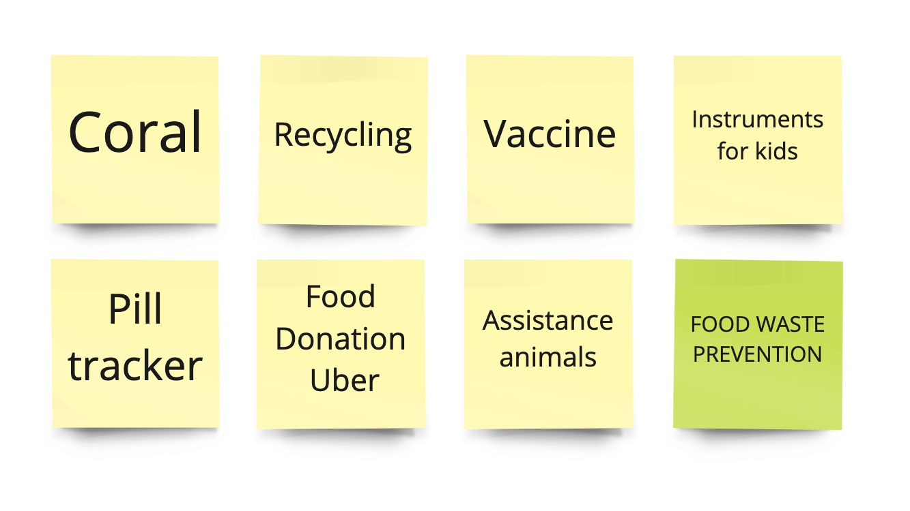
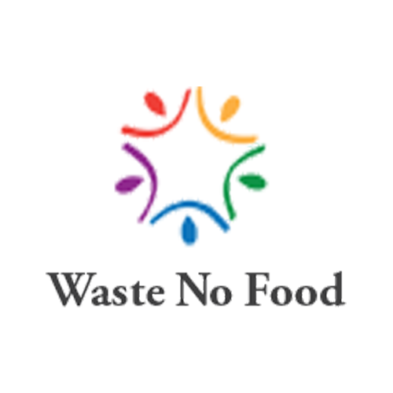
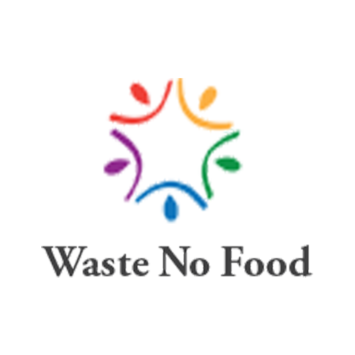
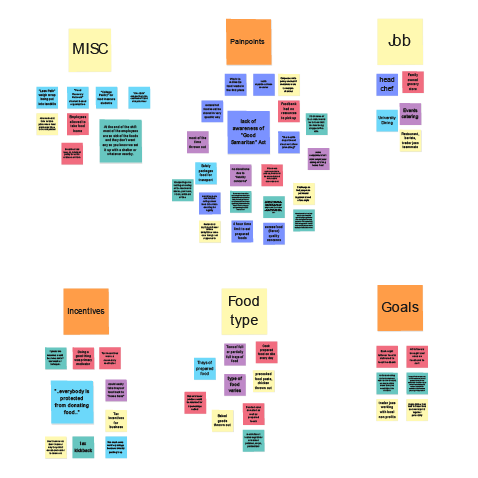
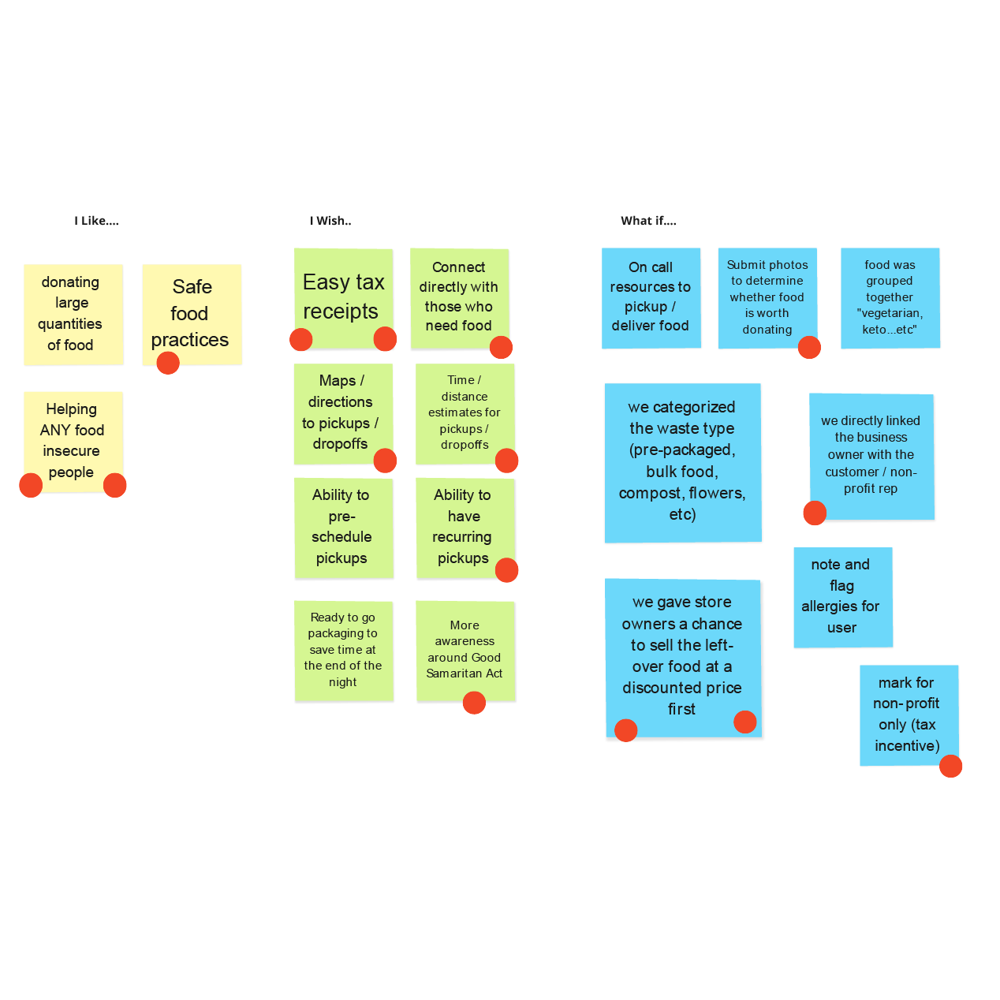
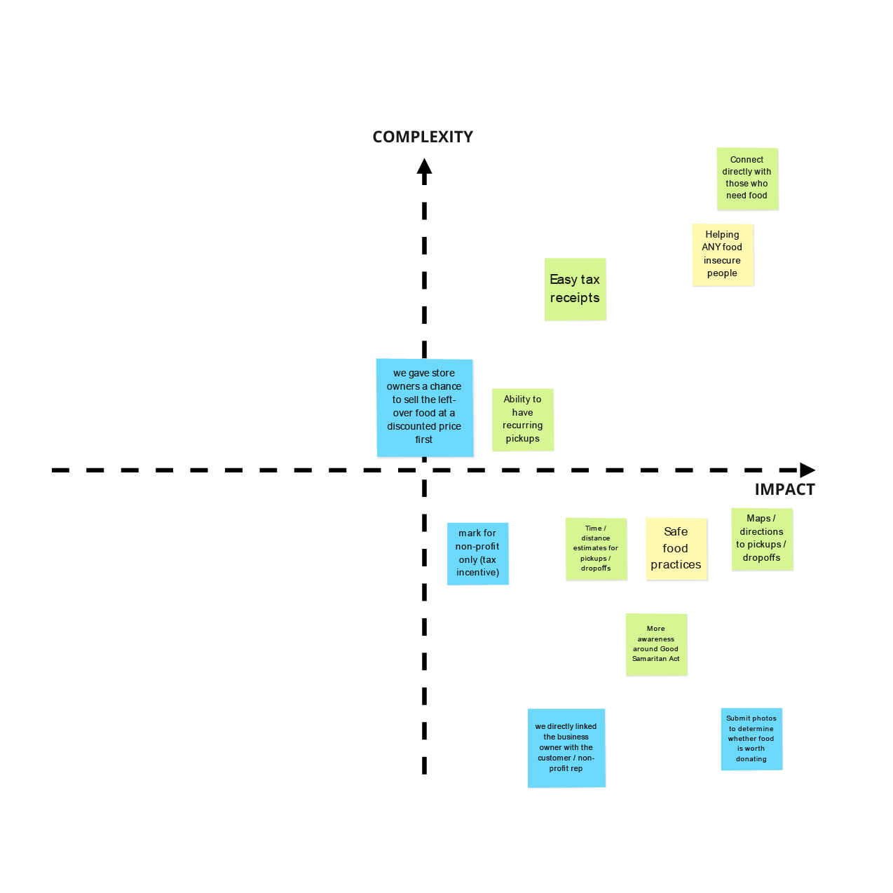

Feedback
Project information
- Category: Web & App Design
- Client: Imaginary startup, "Feedback"
- Project date: June, 2021
- Conducted as part of Georgia Tech UX/UI BootCamp
Introduction
In this three week sprint, we worked in groups on a project that combined our user experience, user interface, and front-end development skills. We had the choice of designing for any modality: websites, mobile app, smart watch, augmented reality, etc. Our prompt was simply to select a cause, and define the cause and what your team wants to accomplish. I worked with my classmates Martin Ade, Jin Lee, Ben Tischler, and Will Woodward.
Since the prompt was so open ended. We had a hard time choosing what cause we wanted to design for. We discussed a bunch of different causes that each of us had interest in and knowledge about, and ultimately decided to focus on the wicked problem of preventing food waste.
Research
Food Waste & Food Insecurity
We began by educating ourselves on food waste and food insecurity. Believe it or not, recently anti-hunger ads asking for donations to help feed Americans became popular in Germany and China. The purpose of these videos was really about getting people's attention and raising awareness of the severe food insecurity problem in the U.S.
Meanwhile, you hear too often about how much food is wasted in the food service industry. An estimated 30-40% of all food in the U.S. gets thrown out.
And major corporations do not want you to know about the food they are wasting. For example, recently a TikTok went viral showing all of the food a Dunkin' Donuts worker had to toss at the end fo the day. Unfortunately, the person who posted the video was later fired.
A few statistics about food waste and food insecurity:
- Globally, food waste is actually responsible for more carbon emissions than the airline industry
- 35 million people in the US experienced hunger in 2019
- Throughout the pandemic, that number has raised to an estimated 42 million people (13 million of which are children)
Source Links: Chinese Ad

The Bill Emerson Good Samaritan Food Donation Act of 1996
The majority of food service businesses are hesitant to donate food because they are worried about being liable if someone were to get sick from the food and try to sue them - which is a fair concern
However, The Good Samaritan Food Donation Act of 1996 actually protects against this, but it is largely unknown. The act was intended to encourage the donation of food and grocery products to nonprofit organizations for distribution to needy individuals by providing a national standard of liability protection for both food donors and the nonprofits accepting these donation.
Even though this law is 25 years old, it is not well known, and health inspectors often dissuade food establishments from donating surplus food, instead of educating them on safe donating practices.
Source Links:
Competitor Analysis
For our competitor analysis, we looked at 5 companies: 4 direct competitors, and 1 indirect competitors. Of the direct competitors, 2 only service their local communities, and 2 are country-wide, but still are not available everywhere. The indirect competitor is an app for restaurants to sell excess food at a reduced price to anyone who wants it. Though, the app is only available in a few major cities (NYC and Boston), and overall did not have good reviews.
After discussing our findings at length, our conclusion was to focus on connecting food industry companies to non-profits, and forego the option for individuals to buy food at a reduced price. While there are companies out there doing this, there aren't enough of them for how large-scale the problem is.
 

Proto-Persona
As we started preparing for stakeholder interviews, we created a proto-persona that reflected our assumptions.
Stakeholder Interviews
As a team, we interviewed 6 individuals who have worked in a wide range of jobs in the food service industry.
“It's illegal 'cause what happens if anybody gets sick from anything that we give them, we are responsible. We can be sued for it.”
Andersen S.
Head Chef
“My dad and his co-workers would every day take it over to the local food bank.”
Scott M.
Grocer
“We're protected under Good Samaritan ... so as long as we're in good faith, donating its food food that we know is still usable..”
Tony D.
University Food Service Director
“Freshness of the product really isn't that great ... like the leftover mashed potatoes at the bottom”
Mike V.
Kitchen Manager
“We regularly had almost full trays that we would get rid of.”
Evann H.
Catering Server
“Anything left over gets thrown away.”
Abby N.
Food Service Worker
Analysis & Definition
After our interviews we organized our thoughts and notes and created our affinity diagram as well as our feature prioritization matrix which led us to two defining points. First and foremost there was an extreme lack of awareness around good samaritan act from hourly employees all the way up to the health department officials.
We also learned that most people want to give away good food, but for most there isn’t a great option to connect them with those in need immediately. Most of the time it would require them to stay late and be there to ensure the party picking up food knew what it was and ensure it had been kept well.
We focused on things only in the low complexity and high impact quadrant which came out to be giving out digital donation receipts, time and distance estimates via maps, submitting photos and a description of the available food and directly linking the unused food to an organization that can get it into the hands of somebody who needs it.
Affinity Diagram
I Like, I Wish, What If?
Feature Prioritization
Defining the Problem
Now that we better understood our users, we could define our user insight. Also we realized we could take a double pronged approach in our problem statement. In essence, our mission became to help feed hungry people and reduce the amount of food waste that is negatively affecting the environment which is manifested in our value proposition.
User Insight
Food service and grocery industry businesses need to donate excess food to hunger relief organizations in order to reduce the amount of food waste and food insecurity in the United States.
Problem Statement
Feedback was designed to solve the two-sided problem of food waste and hunger. Food service industry businesses often have leftover food that goes to waste and doesn’t make it to the people who could benefit from it. This is often due to the many challenges faced by the businesses, including lack of knowledge about the legalities involved, lack of knowledge of where to donate and an overall lack of time and motivation. Feedback takes these hurdles in mind and strives to connect the food service businesses with organizations helping to feed the hungry in as seamless and simple a way as possible, while providing motivation and helping to alleviate the pain points of the process.
Value Proposition
Reduce food waste while helping those in need.
User Personas
Three distinct personas became apparent who would be involved in the overall use of FeedBack: Donna (grocery manager), John (food bank volunteer), and Mark who is food insecure.
Donna Rylie
Age: 35
Grocery Store Manager
Married: No Children
“I hate having to throw out food. It's such a waste!"
John Davis
Age: 28
IT Specialist | Non-profit Volunteer
Single
“I like to spend my free time helping out at my local food pantry"
Mark Woods
Age: 38
Retail Cashier
Married: 2 Children
“My wife and I both work full-time, but we still have a hard time keeping food on the table."
Storyboard
The three personas are shown here using the full cycle of the product. Donna is closing down her grocery store for the evening and notices she has a large amount of unsold, pre prepared food from two days ago. Donna knows she can no longer sell this tomorrow, but it is still safe to eat. She pulls out her phone and submits it as a donation on the Feedback app.
John, who works at the local food bank gets a notification that there is food ready to be donated just a few miles from his food bank. He opens the app, claims the pre prepared meals and has the map navigate him there. Donna is now directly connected to john, and knows when he will arrive.
John takes the food back to his food bank where a family in need, like Mark’s, now has food for their dinner table.
Sketches
Next, we started collecting ideas for the basic layouts for our product. This is a collection of sketches both digital and by hand. From the left, we have our mobile prototype, the first draft of user flows, the logo, and the wireframe for the website.
We did a lot of brainstorming to come up with a good name and we decided to go with Feedback. For the logo, we wanted to emphasize the re-purposing of food with the infinite loop in the center.
Card Sorting & Site Map
During the early stages of prototyping, we focused solely on the website. But as development continued, we agreed that the solution we imagined would not be fully functional without bringing the mobile app to the equation.
While the website introduces the product to new users and shows them how our solution would work, our mobile app serves as the main platform. The business owners will use the app to upload food donations and the non-profit organization representatives will use it to find and receive donations. When the exchange is taking place between the two, they can provide ETA or track the donation in real-time if location services are enabled.
User Flows
For our website prototype, we wanted to have the most logical structure possible for the first-time visitors. It flows in the order: who we are, what we do, introduction to the problem, how we can solve it, and why people should choose our product and partner with us.
For our mobile prototype, we focused on the main actions that the users would go through while using the app. We referenced our user storyboard to develop this.
Prototypes & Testing
Low Fidelity Prototype
After completing our basic user flows, we started building the layouts for our website and mobile prototype. For our website, we wanted to tell our story in one single page in the most engaging and compelling way as possible. So we divided the sections and placed the elements accordingly.
For our mobile app, we wanted to keep it as simple as possible, so that it would be easy to use and yet has all of the features needed to complete the donation and also track statistics.
Brand & Style Guide
We wanted to give our website and app a simple and clean look while also creating an earthy and friendly space where people can work together to do something good for the community and the environment. We chose a variety of greens to work with and an off-white "recycled paper" color for a background color element.
User Testing
Through testing wanted to understand and validate two main things. (1) Does the user understand what Feedback does and how it functions? (2) Are users directed to download the app? We shared a link to our live website prototype with our classmates and family and friends to receive heat map impressions, and conducted one Zoom user testing session.
From our heat map data, we learned that most things functioned the way we were expecting, but some users thought certain elements were clickable that weren’t. We changed those elements to look less clickable.
During our Zoom user test, our user was a little confused as to how exactly Feedback worked. To remedy this, we added some additional information to explain to the user the step-by-step process.
High-Fidelity
As we built out our high-fidelity prototype, we kept our user research closely in mind. We added additional content, and revisited button wording and placement to ensure they were communicating the desired message and function. We also simplified as much as possible to lower the barrier for donations and recipients.
Final Prototype
Final Thoughts
We are very proud of our prototype, but there is clearly a lot of work to be done if this idea were to become a reality.
Features for Further Development:
- Incorporate a donation page (time, money)
- Continue development of companion mobile app
- How to register with Feedback and confirm 501(c)(3) status
- Include push notifications when donations are posted within a user’s defined parameters
- Potentially have people working directly for Feedback picking up food
- Links to additional resources on website & app
- Good Samaritan Act
- Composting
- Tax Benefits
- What the individual can do to prevent food waste in their home